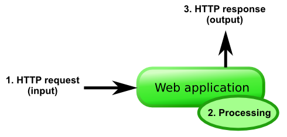
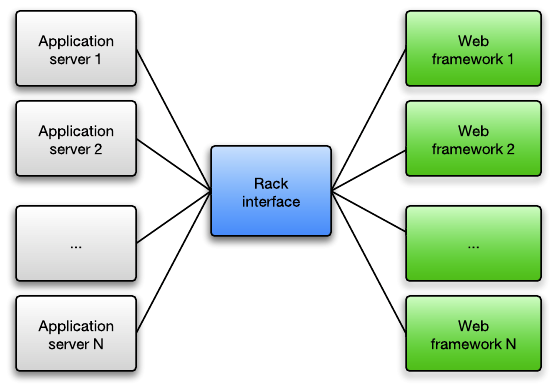
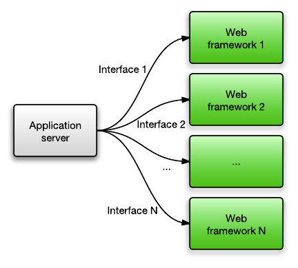
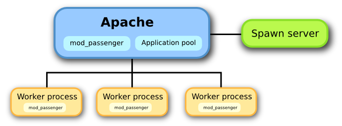
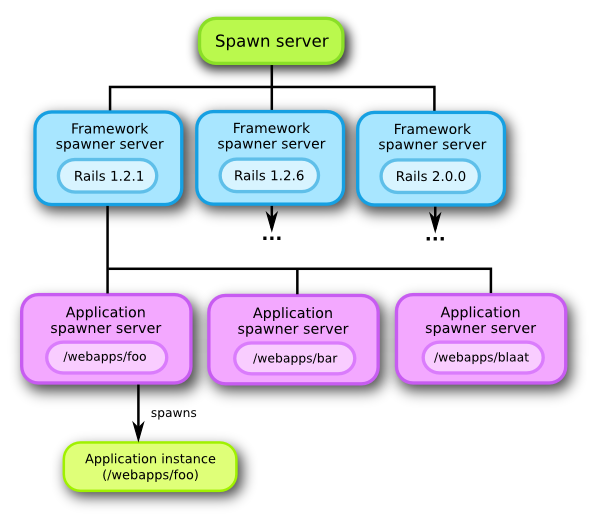

1. Introduction to related technologies
1.1. Web application models
Before we describe Phusion Passenger, it is important to understand how typical web applications work from the viewpoint of someone who wants to connect the application to a web server.
A typical, isolated, web application accepts an HTTP request from some I/O channel, processes it internally, and outputs an HTTP response, which is sent back to the client. This is done in a loop, until the application is commanded to exit. This does not necessarily mean that the web application speaks HTTP directly: it just means that the web application accepts some kind of representation of an HTTP request.

Few web applications are accessible directly by HTTP clients. Common models are:
-
The web application is contained in an application server. This application server may or may not be able to contain multiple web applications. The application server is then connected to the web server through some kind of protocol. This protocol may be HTTP, FastCGI, SCGI, AJP or whatever. The web server dispatches requests to the application server, which in turn dispatches requests to the correct web application, in a format that the web application understands. Conversely, HTTP responses outputted by the web application are sent to the application server, which in turn sends them to the web server, and eventually to the HTTP client.
Typical examples of such a model:
-
A J2EE application, contained in the Tomcat application server, proxied behind the Apache web server. Tomcat can contain multiple web applications in a single Tomcat instance.
-
Most Ruby application servers besides Phusion Passenger (Thin, Unicorn, Goliath, etc). These application servers can only contain a single Ruby web application per instance. They load the web application into their own process and are put behind a web server (Apache, Nginx) in a reverse proxy setup.
-
-
The web application is contained in a web server. In this case, the web server acts like an application server. This is the case for PHP applications on Apache servers with mod_php. Note that this does not necessarily mean that the web application is run inside the same process as the web server: it just means that the web server manages applications. In case of mod_php however PHP does run directly inside the Apache worker processes.
Phusion Passenger for Apache and Phusion Passenger for Nginx implement this model.
-
The web application is a web server, and can accept HTTP requests directly. This is the case for the Trac bug tracking system, running in its standalone server. In most setups they are reverse proxied behind a real web server such as Apache or Nginx, instead of accepting HTTP requests directly.
Phusion Passenger Standalone implements this model. You can expose Phusion Passenger Standalone directly to the Internet because it uses Nginx internally.
-
The web application does not speak HTTP directly, but is connected directly to the web server through some communication adapter. CGI, FastCGI and SCGI are good examples of this.
These descriptions are true for virtually all web applications, whether they’re based on PHP, Django, J2EE, ASP.NET, Ruby on Rails, or whatever. Note that all of these models provide the same functionality, i.e. no model can do something that a different model can’t. The critical reader will notice that all of these models are identical to the one described in the first diagram, if the combination of web servers, application servers, web applications etc. are considered to be a single entity; a black box if you will.
It should also be noted that these models do not enforce any particular I/O processing implementation. The web servers, application servers, web applications, etc. could process I/O serially (i.e. one request at a time), could multiplex I/O with a single thread (e.g. by using select(2) or poll(2)) or it could process I/O with multiple threads and/or multiple processes.
Of course, there are many variations possible. For example, load balancers could be used. But that is outside the scope of this document.
1.1.1. Why reverse proxy?
As you’ve seen, it is often necessary to put the web application or its application server behind a real web server in a reverse proxy setup even when the web app/app server already speaks HTTP. This is because implementing HTTP in a proper, secure way involves more than just speaking the protocol. The public Internet is a hostile environment where clients can send any arbitrary data and can exhibit any arbitrary I/O patterns. Web servers like Apache and Nginx have already implemented world-class I/O and connection handling code and it would be a waste to reinvent their wheel. In the end, putting the application in a reverse proxying setup makes the whole system more robust and and more secure.
A typical problem involves dealing with slow clients. These clients may send HTTP requests slowly and read HTTP responses slowly, perhaps taking many seconds to complete their work. A naive single-threaded HTTP server implementation that reads an HTTP requests, processes, and sends the HTTP response in a loop may end up spending so much time waiting for I/O that spends very little time doing actual work. Worse: suppose that the client is malicious, just leaves the socket open and never reads the HTTP response, then the server will spend forever waiting for the client, not being able to handle any more requests.
while true
client = accept_next_client()
request = read_http_request(client)
response = process_request(request)
send_http_response(client, response)
end
There are many ways to solve this problem. One could use one thread per client, one could implement I/O timeouts, one could use an evented I/O architecture, one could have a dedicated I/O thread or process buffer requests and responses. The point is, implementing all this properly is non-trivial. Instead of reimplementing these over and over in each application server, it’s better to let a real web server deal with all the details and let the application server and the web application do what they’re best at: their own core business logic.
1.2. Ruby Rack and Ruby on Rails
The de-facto standard interface for Ruby web applications is Rack. Rack specifies an programming interface for web application developers to implement. This interface covers HTTP request and response handling, and is not dependent on any particular application server. The idea is that any Rack-compliant application server can implement the Rack specification and work with all Rack-compliant web applications.

In the distant past, each Ruby web framework had its own interface, so application servers needed to explicitly add support for each web framework. Nowadays application servers just support Rack.

Ruby on Rails has been fully Rack compliant since version 3.0. Rails 2.3 was partially Rack-compliant while earlier versions were not Rack-compliant at all. Phusion Passenger supports Rack as well as all Rails 1.x and 2.x versions.
A particularly interesting thing to note is that a lot of the memory occupied by Ruby on Rails applications is spent on storing the program code (i.e. the abstract syntax tree (AST)) in memory. This is observed through the use of the memory statistics function in Ruby Enterprise Edition. Also, a lot of the startup time of a Ruby on Rails application is spent on bootstrapping the Rails framework.
1.3. Apache
The Apache web server has a dynamic module system and a pluggable I/O multiprocessing (the ability to handle more than 1 concurrent HTTP client at the same time) architecture. An Apache module which implements a particular multiprocessing strategy, is called a Multi-Processing Module (MPM). The single-threaded multi-process prefork MPM had been the default and the most popular one for a long time, but in recent times the hybrid multi-threaded/multi-process worker MPM is becoming increasingly popular because of its better performance and scalability. Furthermore, Apache 2.4 introduced the event MPM which is a hybrid evented/multi-threaded/multi-process MPM and offers even more scalability benefits.
The prefork MPM remains in wide use today because it’s the only MPM that works well with mod_php.
The prefork MPM spawns multiple worker child processes. HTTP requests are first accepted by a so-called control process, and then forwarded to one of the worker processes. The next section contains a diagram which shows the prefork MPM’s architecture.
1.4. Nginx
Nginx is a lightweight web server that is becoming increasingly popular. It is known to be smaller, lighter weight and more scalable than Apache thanks to its evented I/O architecture. That said, Nginx is less flexible than Apache. For example it has no dynamic module system: all modules must be statically compiled into Nginx.
2. Phusion Passenger architecture
2.1. Overview
Phusion Passenger’s architecture is a lot like model #2 described in Web application models. In other words, Phusion Passenger extends Apache/Nginx and allows it to act like an application server. This is shown in the following diagram:

Phusion Passenger consists of:
-
an Apache module, mod_passenger. This is written in C++, and can be found in the directory ext/apache2.
-
an Nginx module ngx_http_passenger_module. This is written in C, and can be found in the directory ext/nginx.
-
Common code used by both the Apache and the Nginx module. For example the helper agent is among this code. This code is mostly C++ and can be found in the directory ext/common.
The module is active all Apache/Nginx processes. When an HTTP request comes in, the Phusion Passenger module checks whether the request should be handled by a Phusion Passenger-served application. If so, then the module spawns one or more processes for the corresponding application (if necessary), forwards the request to that application process and forwards its generated response back to the client. This is all done with the assistance of the Phusion Passenger helper agent, which stores state that must be shared among all web server worker processes and handles much of the internal I/O between the web server and the application processes.
It should be noted that applications do not run in the same address space as the web server. This differentiates Passenger from other application-server-inside-web-server software such as mod_php, mod_perl and mod_ruby. If the application crashes or leak memory, it will have no effect on the web server. In fact, stability is one of our highest goals. Phusion Passenger is carefully designed and implemented so that the web server shouldn’t crash because of Phusion Passenger.
2.2. Spawning and caching of code and applications
A very naive implementation of an application server would spawn an application process every time an HTTP request is received, just like CGI would. However, spawning Ruby applications is typically expensive. It can take a few seconds on a modern computer, and possibly much longer on a heavily loaded server. A less naive implementation would keep spawned application processes alive, similar to how Lighttpd’s FastCGI implementation works. However, this still has several problems:
-
The first request to a Rails website will be slow, and subsequent requests will be fast. But the first request to a different Rails website - on the same web server - will still be slow.
-
As we’ve explained earlier in this article, a lot of memory in a Rails application is spent on storing the AST of the Ruby on Rails framework and the application. Especially on shared hosts and on memory-constrained Virtual Private Servers (VPS), this can be a problem.
Both of these problems are very much solvable, and we’ve chosen to do just that.
The first problem can be solved by preloading Rails applications, i.e. by running the Rails application before a request is ever made to that website. This is the approach taken by most Rails hosts, for example in the form of a Mongrel cluster which is running all the time. However, this is unacceptable for a shared host: such an application would just sit there and waste memory even if it’s not doing anything. Instead, we’ve chosen to take a different approach, which solves both of the aforementioned problems.
We spawn Rails applications via a spawn server. The spawn server caches Ruby on Rails framework code and application code in memory. Spawning a Rails application for the first time will still be slow, but subsequent spawn attempts will be very fast. Furthermore, because the framework code is cached independently from the application code, spawning a different Rails application will also be very fast, as long as that application is using a Rails framework version that has already been cached.
Another implication of the spawn server is that different Ruby on Rails will share memory with each other, thus solving problem #2. This is described in detail in the next section.
But despite the caching of framework code and application code, spawning is still expensive compared to an HTTP request. We want to avoid spawning whenever possible. This is why we’ve introduced the application pool. Spawned application instances are kept alive, and their handles are stored into this pool, allowing each application instance to be reused later. Thus, Passenger has very good average case performance.
The application pool is shared between different worker processes. Because the worker processes cannot share memory with each other, either shared memory must be used to implement the application pool, or a client/server architecture must be implemented. We’ve chosen the latter because it is easier to implement. The Apache control process acts like a server for the application pool. However, this does not mean that all HTTP request/response data go through the control process. A worker process queries the pool for a connection session with a Rails application. Once this session has been obtained, the worker process will communicate directly with the Rails application.
The application pool is implemented inside mod_passenger. One can find detailed documentation about it in the C++ API documentation, in particular the documentation about the ApplicationPool, StandardApplicationPool and ApplicationPoolServer classes.
The application pool is responsible for spawning applications, caching spawned applications' handles, and cleaning up applications which have been idle for an extended period of time.
2.3. The spawn server
The spawn server is written in Ruby, and its code can be found in the directory lib/passenger. Its main executable is bin/passenger-spawn-server. The spawn server’s RDoc documentation documents the implementation in detail.
The spawn server consists of 3 logical layers:
-
The spawn manager. This is the topmost layer, and acts like a fascade for all the underlying layers. Clients who use the spawn server only communicate with this layer.
-
The framework spawner server. The spawn manager spawns a framework spawner server for each unique Ruby on Rails framework version. Each framework spawner server caches the code for exactly one Ruby on Rails framework version. A spawn request for an application is forwarded to the framework spawner server that contains the correct Ruby on Rails version for the application.
-
The application spawner server. This is to the framework spawner server what the framework spawner server is to the spawn manager. The framework spawner server spawns an application spawner server for each unique Ruby on Rails application (here “application” does not mean a running process, but a set of (source code) files). An application spawner server caches the code for exactly one application.

As you can see, we have two layers of code caching: when the spawn server receives a request to spawn a new application instance, it will forward the request to the correct framework spawner server (and will spawn that framework spawner server if it doesn’t already exist), which — in turn — will forward it to the correct application spawner server (which will, again, be created if it doesn’t already exist).
Each layer is only responsible for the layer directly below. The spawn manager only knows about framework spawner servers, and a framework spawner server only knows about its application spawner servers. The application spawner server is, however, not responsible for managing spawned application instances. If an application instance is spawned by mod_passenger, its information will be sent back to mod_passenger, which will be fully responsible for managing the application instance’s life time (through the application pool).
Also note that each layer is a seperate process. This is required because a single Ruby process can only load a single Ruby on Rails framework and a single application.
2.3.1. Memory sharing
On most modern Unix operating systems, when a child process is created, it will share most of its memory with the parent process. Processes are not supposed to be able to access each others' memory, so the operating system makes a copy of a piece of memory when it is written to by the parent process or the child process. This is called copy-on-write (COW). Detailed background information can be found on Ruby Enterprise Edition’s website.
The spawn server makes use of this useful fact. Each layer shares its Ruby AST memory with all of its lower layers, as long as the AST nodes in question haven’t been written to. This means that all spawned Rails applications will — if possible — share the Ruby on Rails framework’s code, as well as its own application code, with each other. This results in a dramatic reduction in memory usage.
|
|
Sharing memory only works if Ruby Enterprise Edition is used. This is because the standard Ruby interpreter’s garbage collector isn’t copy-on-write friendly. Please visit the Ruby Enterprise Edition website for technical details. Passenger works fine with standard Ruby. You still get to enjoy reduced Rails startup times. You just won’t be able to benefit from memory sharing. |
Note that Rubinius's garbage collector is already copy-on-write friendly.
2.4. Handling of concurrent requests
As explained earlier, a single Rails application instance can only handle a single request at the same time. This is obviously undesirable. But before we dive into the solution, let us take a look how the “competition” solves this problem. PHP has similar problems: a single PHP script can also process only one HTTP request at a time.
-
mod_php “solves” this problem by using Apache’s MPM. In other words, mod_php doesn’t do anything by itself at all. A single Apache worker process/thread can only handle 1 PHP request at a time, but Apache spawns multiple worker processes/threads.
-
PHP-FastCGI solves the problem by spawning multiple persistent PHP servers. The number of PHP servers is independent from the number of Apache worker processes/threads. This approach is a lot like existing Rails setups, in which a frontend web server proxies requests to a persistent Mongrel cluster.
Passenger cannot use the mod_php way because it would force us to spawn a new Rails application for each request, which is — as explained earlier — unacceptably slow. Instead, Passenger uses the PHP-FastCGI approach. We maintain a pool of application instances, and whenever a request is received, we forward the request to one of the application instances in the pool. The size of the pool is configurable, which is useful for administrators of servers that are either heavily loaded or have little memory.
The reader might also be interested in studying the application pool’s algorithm, which is non-trivial. The algorithm is documented in detail in ApplicationPool algorithm.txt.
3. Appendix A: About this document
The text of this document is licensed under the Creative Commons Attribution-Share Alike 3.0 Unported License.